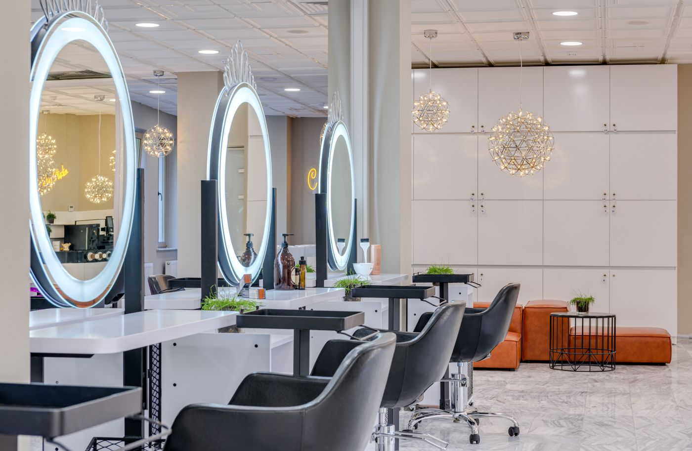

Стрижка, укладка, окрашивание
Стрижка, укладка и окрашивание — женские и мужские (барбер).
уточняетсяцен на сайте нет
Выберите услугу, мастера и удобное время — заявка придёт администратору в Telegram, он подтвердит запись.

Это концепт. С вашими фото и правками будет ещё лучше
Всё, что перечислено на сайте салона.
Стрижка, укладка и окрашивание — женские и мужские (барбер).
Маникюр и педикюр.
Косметологические уходы.
Массаж и SPA-уходы.
Оформление бровей и макияж.
Направления — из текста на сайте салона. Цен на сайте нет: прайс «от» подставит салон.
Услуга → мастер → время → телефон. Это рабочий макет: попробуйте.
Выберите направление — дальше покажем мастеров.
Мастера — по сайту салона. Можно выбрать «Любой мастер».
Время — по Красноярску. Часы по Яндекс Картам: пн–пт 9:00–20:30, сб 9:00–20:00, вс 10:00–19:00 (на сайте не указаны — уточняется).
Так это будет работать: администратор получает заявку с услугой, мастером и временем и подтверждает запись удобным способом. Сейчас это макет — ничего не отправлено и не сохранено.
Запись сразу к своему мастеру.
Топ-парикмахер, универсал.
Парикмахер-универсал.
Парикмахер-универсал.
Парикмахер-универсал.
Топ-мастер, барбер.
Мастер маникюра и педикюра.
Мастер маникюра и педикюра.
Косметолог.
Косметолог-эстетист.
Массажист, велнес.
Мастера — из блока команды на сайте салона (там же управляющая Екатерина Лупикова и администратор Анна Рабченко). Фото и график мастеров — уточняются.
Здесь будут реальные фото салона и работ мастеров.
Только то, что опубликовано салоном.
На текущем сайте цен нет — прайс «от» по направлениям уточняется у салона.
По Яндекс Картам: пн–пт 9:00–20:30, сб 9:00–20:00, вс 10:00–19:00. На сайте часы не указаны — уточняется.
У салона есть Telegram-канал и группа ВКонтакте (ссылки на сайте). В демо заявка из формы приходит администратору в Telegram.
Красноярск, ул. 60 лет Октября, 36.
Красноярск, ул. 60 лет Октября, 36. Часы — по Яндекс Картам, уточняется.
Пн–пт 9:00–20:30 · сб 9:00–20:00 · вс 10:00–19:00 — уточняется
info@lindasalon.ru · Telegram ↗ · ВКонтакте ↗
В Яндекс Картах второй номер другой — +7 (391) 272-24-30; какой актуален, уточняется.